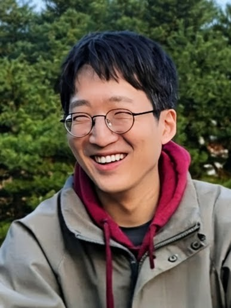

외부 연사
13:30 – 14:20
김규래 Kyurae Kim
University of Pennsylvania 박사과정
AI 작성
서강대학교에서 공학 학사를 마치고 University of Pennsylvania에서 Jacob R. Gardner 교수와 함께
베이지안 추론 계산과 확률적 최적화를 연구합니다. 변분추론(BBVI)의 수렴성과 확장성을 다룬 논문을
NeurIPS·ICML에 연속으로 발표했고, Julia의 Turing 팀에서 AdvancedVI.jl·SliceSampling.jl 등
확률적 추론 라이브러리를 직접 만들고 있습니다. 임베디드 소프트웨어 엔지니어와 병원 연구원, 영국 리버풀대
연구원을 거쳐 해외 박사과정에 이른 경로를 함께 들을 수 있습니다.
발표 주제
krkim.me